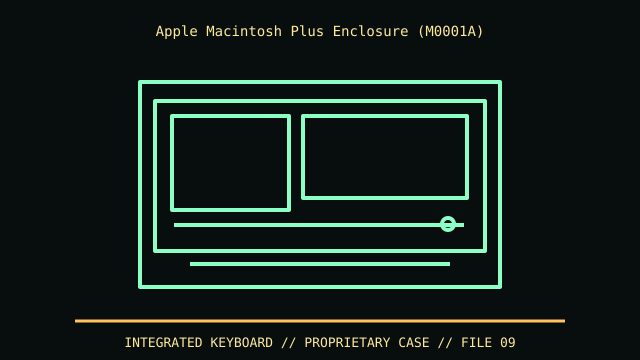

[ IDENTIFIED ENCLOSURE // MACINTOSH PLUS, MODEL M0001A (1986) ]
Apple Macintosh Plus Enclosure (M0001A)
Compact all-in-one case approximately 13.6 × 9.6 × 10.9 in (H × W × D), similar outer dimensions to early compact Macs. Rear vents and CRT glass clearance must be preserved.

VARIANT / ARCHIVAL CAVEAT: Distinguish M0001A Plus from M0001 128K and M0001W 512Ke/other service upgrades by rear label and board. CRT/analog board retains hazardous charge; preserve flyback/grounding layout.
Mechanical specifications and fit
| Catalog identity | Macintosh Plus, model M0001A (1986) |
|---|---|
| Dimensions and clearances | Compact all-in-one case approximately 13.6 × 9.6 × 10.9 in (H × W × D), similar outer dimensions to early compact Macs. Rear vents and CRT glass clearance must be preserved. |
| Drive bays / mounts | One internal 3.5-inch 800 KB floppy mechanism; no standard drive bay. External SCSI devices connect at the rear on the Plus. |
| Board, system and compatibility | Proprietary logic/analog boards and CRT; no standard motherboard fit. Macintosh Plus SCSI and serial interfaces differ materially from the original 128K/512K. |
| Revision / identification | Distinguish M0001A Plus from M0001 128K and M0001W 512Ke/other service upgrades by rear label and board. CRT/analog board retains hazardous charge; preserve flyback/grounding layout. |
Preservation and installation notes
Distinguish M0001A Plus from M0001 128K and M0001W 512Ke/other service upgrades by rear label and board. CRT/analog board retains hazardous charge; preserve flyback/grounding layout.
Proprietary logic/analog boards and CRT; no standard motherboard fit. Macintosh Plus SCSI and serial interfaces differ materially from the original 128K/512K.
- Capture the complete model/SKU, serial/date label, board assembly and bay/backplane/riser identifiers before disassembly; keep matched screws, trays, carriers, feet and cables with the case.
- Check the cited manual's specific build option before transferring hardware. Published maximum GPU, drive, fan or radiator capacity may not be simultaneous when a removable cage or alternative riser occupies that volume.
- For rack and vintage systems, preserve the exact rails, shields, doors, brackets and model-specific safety instructions; do not infer compatibility from a familiar brand or physical connector shape.
Manufacturer manuals and archival sources
- Apple Support — Macintosh Plus technical specificationsPrimary manufacturer or model-specific technical/manual reference used for the identification and mechanical data above.
- Macintosh Plus Service Manual — Internet ArchiveSecond product manual, manufacturer resource or established technical archive; choose the exact regional SKU and revision.
When exact dimensions depend on configuration, the text says so; verify the measured specimen before making a fit or restoration decision.